✓
Manual Testing
Thiết kế và thực thi Test Case theo luồng chức năng, dữ liệu hợp lệ, không hợp lệ và trường hợp ngoại lệ.
Tôi đang dùng chính dự án học tập HUNRE Online Exam để luyện kiểm thử phần mềm: phân tích luồng, viết Test Case, thực thi kiểm tra, ghi nhận Bug và Retest.
Tôi là sinh viên năm 3 ngành Công nghệ thông tin, định hướng phát triển theo QA/Tester. Tôi muốn bắt đầu từ Manual Testing và xây nền tảng chắc về Test Case, Bug Report, kiểm thử dữ liệu không hợp lệ, phân quyền và luồng nghiệp vụ.
Tôi có kiến thức hỗ trợ về HTML/CSS/JavaScript, Node.js và PostgreSQL nên có thể đọc hiểu giao diện, request/response và logic cơ bản khi cần truy nguyên lỗi.
Tester là trọng tâm; kiến thức lập trình và dữ liệu là phần hỗ trợ để hiểu sản phẩm và tìm nguyên nhân lỗi.
Thiết kế và thực thi Test Case theo luồng chức năng, dữ liệu hợp lệ, không hợp lệ và trường hợp ngoại lệ.
Biết mô tả Precondition, Steps, Expected Result, Actual Result, Severity, Priority và Evidence.
Kiểm tra Login, Dashboard, RBAC, trạng thái kỳ thi và các luồng chuyển trang trên web.
Có kinh nghiệm thực hành với Postman, REST API, request/response và PostgreSQL/pgAdmin4 ở mức cơ bản.
Hệ thống quản lý thi trắc nghiệm trực tuyến với nhiều vai trò người dùng.
Kiểm tra trạng thái Sẵn sàng / Sắp tới / Đã kết thúc, thời lượng, số câu, chọn đáp án và nộp bài.
Kiểm tra menu và quyền truy cập của Sinh viên, Giảng viên, Phòng Đào tạo và Quản trị hệ thống.
Kiểm tra luồng Giảng viên gửi đề → PĐT duyệt / từ chối, cùng các điều kiện dữ liệu đầu vào.
Kiểm tra thêm, sửa, xóa tài khoản và thay đổi role theo dữ liệu hiện có của bản demo.
HR có thể mở trực tiếp bộ Test Case / Bug / Summary mà tôi đã dùng cho dự án.
Bộ 200 Test Case chia đều 50 / role, gồm Authentication, Functional, Negative, Validation, Authorization và các kiểm tra dữ liệu.
Đã đạt: TC_EXAM_001–010, gồm vào phòng thi, trạng thái, timer 90 phút, 30 câu, đổi đáp án, palette, chặn nộp và tính điểm.Lỗi được ghi theo nguyên nhân, mức độ ảnh hưởng, cách sửa và trạng thái xử lý.
Tiêu biểu: ReferenceError, thiếu hàm gửi đề, duyệt đề chưa đồng bộ backend, role không hợp lệ.Tổng hợp phạm vi, số lượng Test Case đã xây dựng, checks đã chạy và phần còn cần xác nhận thủ công.
Không sử dụng cụm “100% test pass” cho toàn bộ hệ thống; kết quả được tách rõ giữa phần đã chạy và phần chưa xác nhận.Đối chiếu lỗi trước/sau sửa và lưu Evidence cho những kiểm tra cần bằng chứng trực quan.
Ảnh bên dưới là bản xem nhanh từ bộ QA hiện tại, gồm tổng hợp, Test Case Sinh viên và BUG.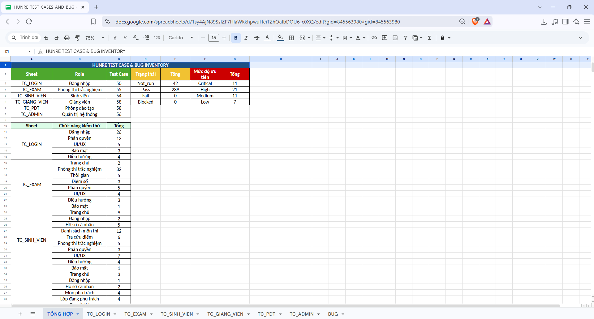
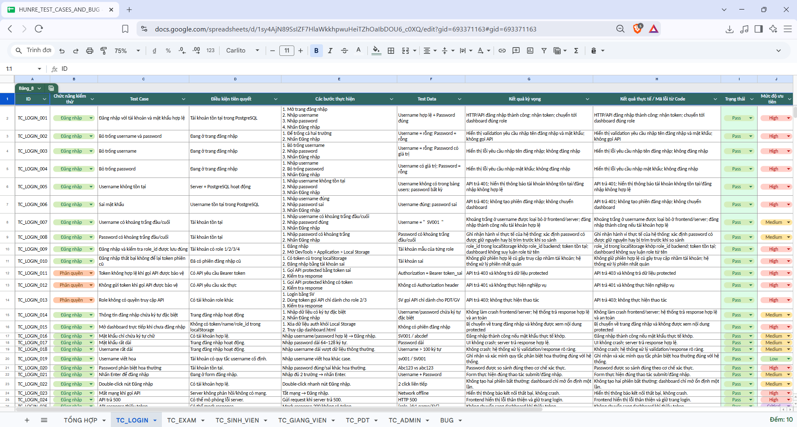
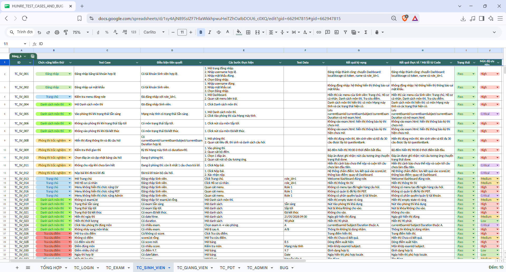
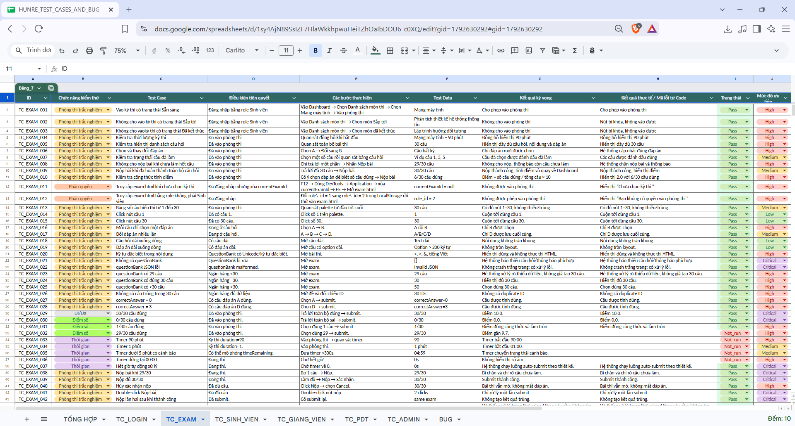
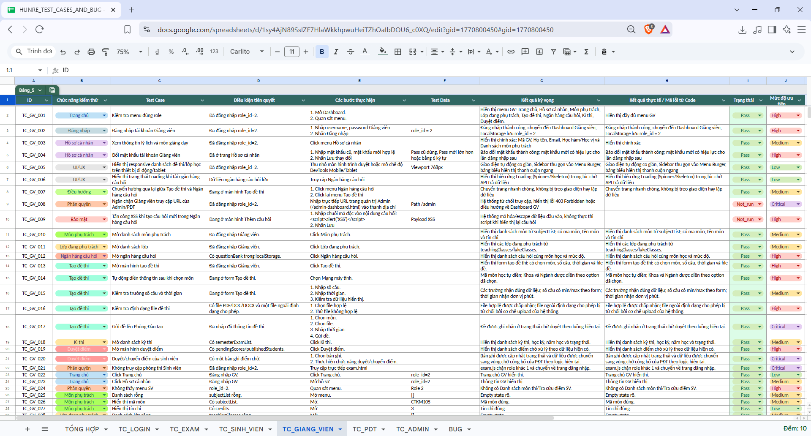
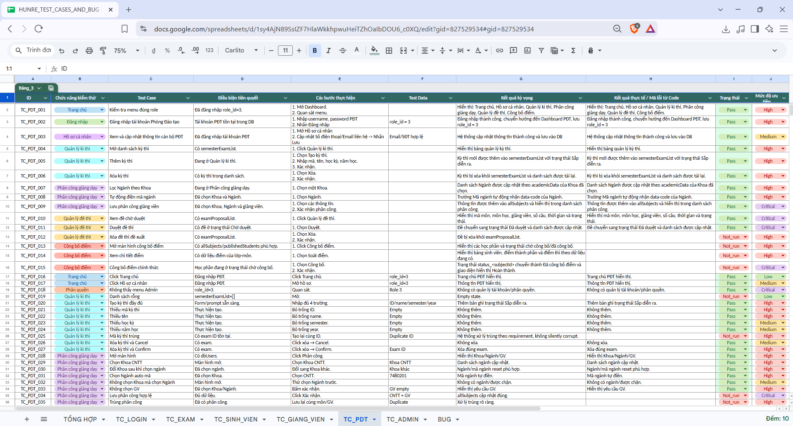
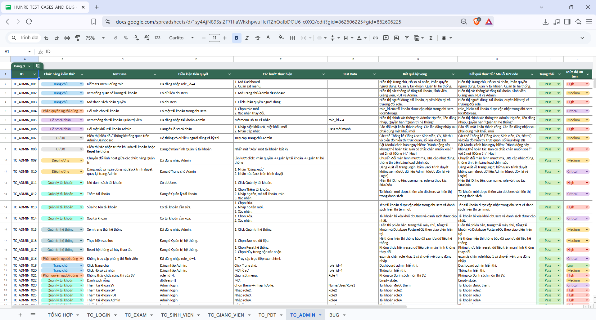
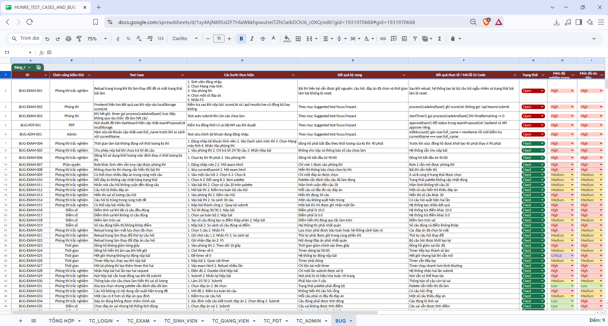
Các ảnh dưới đây là screenshot từ bản chạy local của HUNRE, dùng để minh họa trực tiếp những luồng tôi đã kiểm tra; không phải ảnh mô phỏng.
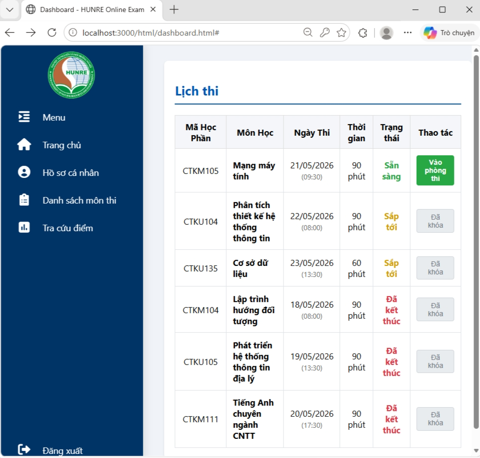
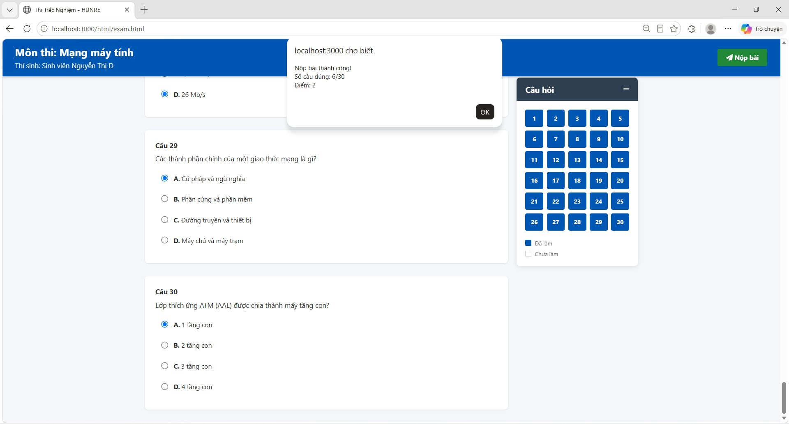
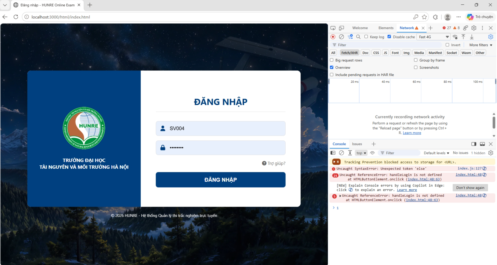
Tôi sẵn sàng học quy trình của team, nhận feedback và nâng kỹ năng qua từng vòng kiểm thử.